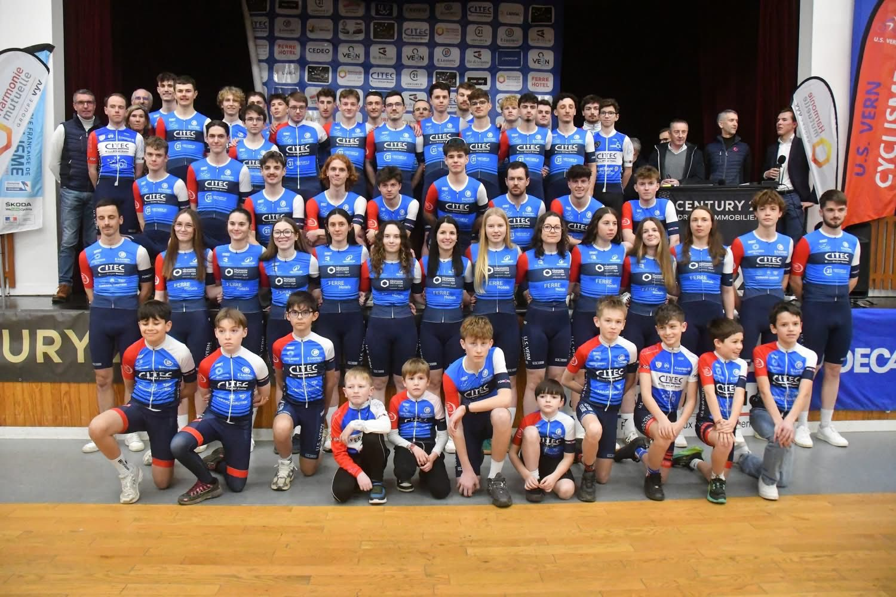
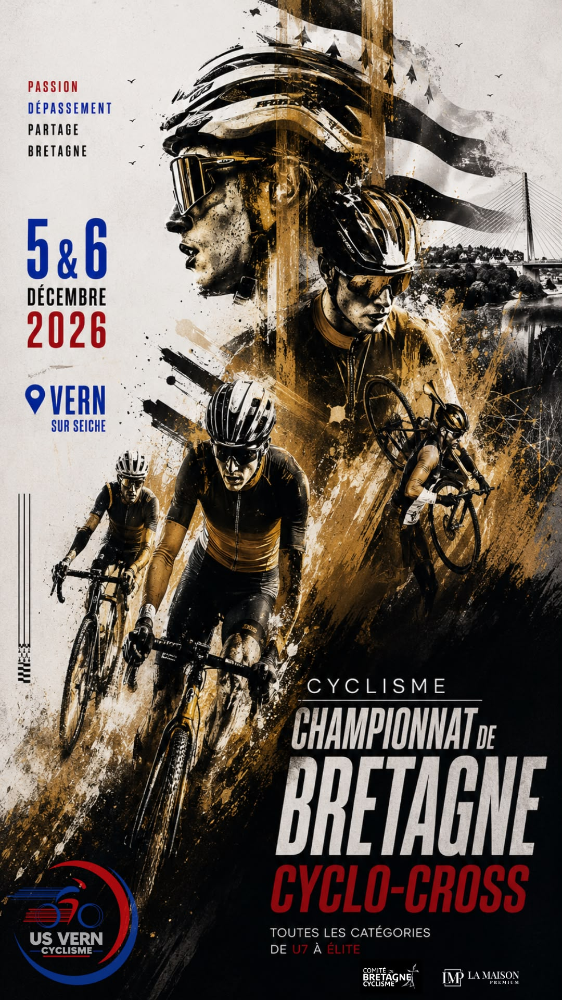
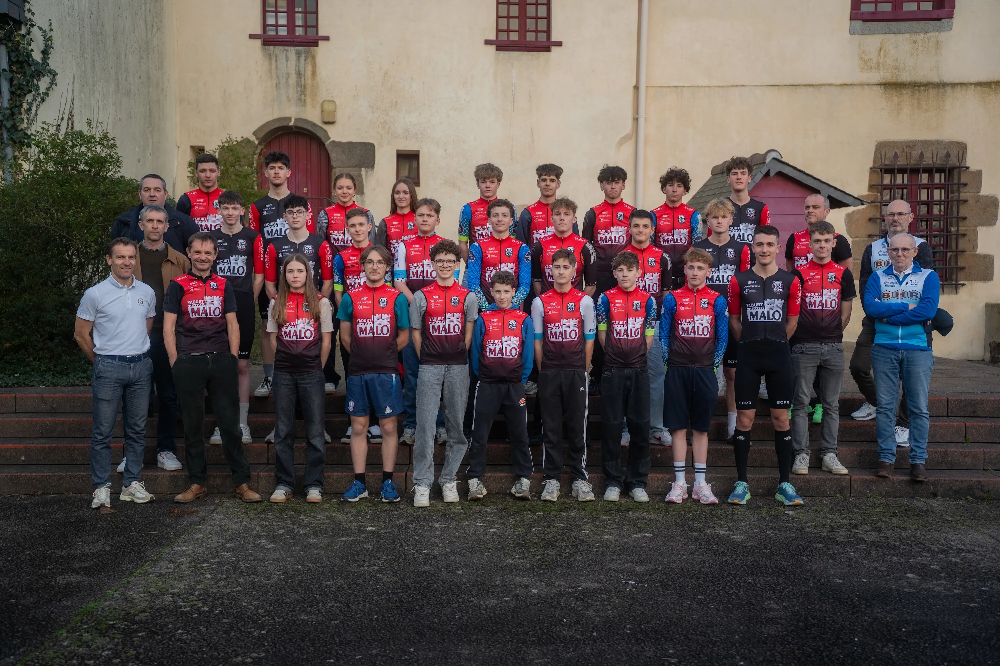

Route, VTT, cyclo-cross et plus encore !
Créée en 1976, l'Union Sportive de Vern Cyclisme (USV Cyclisme) est aujourd'hui sous les commandes de Mickaël Guillard et compte plus de 160 licenciés, des écoles de cyclisme jusqu’aux séniors.
Fermement engagé dans la formation des jeunes, le club met également un point d'honneur à valoriser le cyclisme féminin grâce à un encadrement dédié (l'US Vern Cyclisme a d'ailleurs été pionnier en créant la première division nationale féminine bretonne en 2018). En 2025, le club a inauguré son magnifique "Stade Vélo" à la Vallée de la Seiche, dédié à l'apprentissage en toute sécurité.

Pour lire cette vidéo, vous devez accepter le chargement de contenus depuis Facebook, ce qui implique le dépôt de traceurs (cookies) de leur part.

Vern-sur-Seiche accueille l'élite du cyclo-cross breton les 5 & 6 Décembre 2026. Découvrez le circuit, les infos pratiques et notre cercle de partenaires !
Accéder au site de l'événementL'Entente Cycliste du Pays Rennais
L'US Vern Cyclisme est membre de l'ECPR. Ce beau projet rassemble les forces de plusieurs clubs bretons pour permettre à nos coureurs de briller sur les plus grandes courses du calendrier, grâce à une logistique mutualisée et un fort esprit d'équipe interclubs.
Découvrir l'Entente